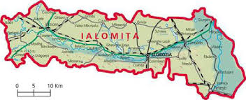

Acasă
Natura 2000 este o retea ecologica de arii naturale protejate formată din arii speciale de conservare (Special Areas of Conservation, SAC) constituite conform Directivei Habitate (Directiva 92/43/CEE privind conservarea habitatelor naturale, a faunei şi florei sălbatice) și arii de protecție specială avifaunistică (Special Protected Areas, SPA) constituite conform Directivei Păsări (Directiva 2009/147/CE referitoare la conservarea păsărilor salbatice). Scopul Retelei Natura 2000 este sa oprească declinul biodiversității prin conservarea pe termen lung a celor mai valoroase și periclitate specii și habitate de interes european, fiecare stat membru avand obligația de a include în rețeaua europeană un anumit procent din spațiul său natural pentru a-i asigura conservarea. Inainte de a deveni membră UE și Romania a avut obligația de a pregăti propria ei verigă pe care să o adauge în lanțul european de situri Natura 2000.
Despre
La nivelul judetului Ialomita au fost desemnate în anii 2007, 2011 și 2016, 13 arii de protectie specială avifaunistica (SPA), prin HG 1284/2007 privind declararea ariilor de protectie specială avifaunistică ca parte integrantă a rețelei ecologice europene Natura 2000 în Romania, modificată prin HG nr. 971/2011 și H.G. 663/2014 și 6 siturilor de importanță comunitară (SCI), prin OMMDD nr. 1964/2007 privind instituirea de arie naturala protejata a siturilor de importanta comunitara ca parte integrantă a rețelei ecologice europene Natura 2000 în Romania, modificat și completat prin OMMP nr. 2387/2011. Reprezentative pentru județul Ialomița sunt habitatele de tipul 92A0 Zăvoaie cu Salix alba şi Populus alba și 3270 Râuri cu maluri nămoloase, cu vegetație din Chenopodion rubri p.p. și Bidention p.p., iar dintre specii, cele mai caracteristice sunt speciile de avifaună care au preferință pentru habitatele acvatice (cursul Dunării, lacurile Fundata, Amara, Benturi, Strachina) din familiile Anatidae (rate, gâște, lebede), Pelecanidae (pelicani), Sternidae (chire, chirighiţe), etc. De–a lungul anilor, au fost organizate pentru marcarea evenimentelor din calendarul ecologic, activități de educație ecologică: concursuri de desen, expoziții itinerante de fotografie, difuzare de filme documentare, simpozioane, etc. având ca scop constientizarea asupra necesității protecției și conservării florei și faunei sălbatice dar şi implicarea comunităților locale în problemele legate de îmbunatăţirea calităţii mediului înconjurator.
Galerie foto
